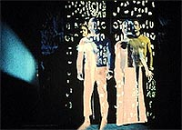
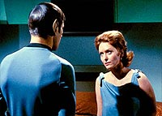
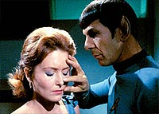
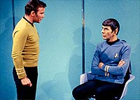
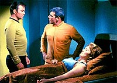

|
MANCHETE
DO EPISÓDIO
Segmento
fecha a série com catastrófica
abordagem sobre a questão feminista
Episódio
anterior
Sinopse:
Data Estelar:
5928.5.
 A
caminho de Beta Aurigae, a Enterprise recebe um chamado de socorro
vindo de Camus II. Um grupo de descida vai ao planeta para descobrir
apenas dois sobreviventes, Janice Lester e um médico chamado
Coleman. Eles contam que todos os outros foram mortos por radiação
de celebium. E Janice está quase tendo o mesmo fim, com a saúde
seriamente debilitada.
Kirk fica surpreso ao encontrar Lester no planeta. Em tempos
pregressos, o capitão esteve envolvido romanticamente com a
pesquisadora. Os dois só se separaram por causa da intensa frustração
de Lester, que nunca conseguiu o comando de uma nave estelar, pelo
que ela acreditava ser uma questão de sexismo. Com os anos, ela
desenvolveu um intenso ódio por Kirk, mas o capitão não tinha
conhecimento disso.
Ainda no planeta, Kirk se senta a sós com ela, relembrando os
velhos tempos, sem desconfiar do que ela poderia estar tramando.
Quando ele menos espera, é subitamente capturado por um estranho
equipamento alienígena encontrado em Camus II. Ele faz com que
Janice e Kirk troquem de corpos. A personalidade do capitão passa
ao corpo da mulher, enquanto ela toma seu corpo, tornando-se
finalmente capitã de uma nave estelar.
 O
novo Kirk, ocupado por Janice Lester, tenta matar sua vítima, mas não
consegue. Todos são levados de volta à Enterprise, e McCoy leva
Lester, com o verdadeiro Kirk preso em seu corpo, à enfermaria para
tratamento. Assim que Janice desperta, ela tenta convencer a todos
de que na verdade é o capitão Kirk, preso no corpo da mulher. Em
contrapartida, Janice, com o corpo de Kirk, toma o controle da nave
e muda o curso para a colônia Benecia. Lá ela planeja abandonar
seu corpo com a personalidade de Kirk presa nele, eliminando
qualquer chance de uma restauração das pessoas a seus corpos
originais.
A tripulação entretanto começa a suspeitar do comportamento
irriquieto de Kirk e, quando Spock tenta questioná-lo, ele o acusa
de um motim. A tripulação sênior percebe que há algo de errado
quando Kirk decide não só promover um julgamento dos amotinados,
como condená-los à morte. Com base nisso, eles afastam Kirk, com a
personalidade de Janice, de suas ocupações.
O elo da transferência acaba se enfraquecendo e Kirk pode retornar
a seu corpo, e o mesmo ocorre com Lester. Janice ainda tenta fazer
um último ataque a Kirk, mas acaba caindo aos prantos. O dr.
Coleman, apaixonado por Janice, pede autorização para cuidar dela.
A Enterprise e sua tripulação deixam os dois e voltam à sua missão
original.
Comentários:
Se "Turnabout Intruder" não
consegue ser nem um bom episódio per se, o que não se dirá de
carregar a responsabilidade de fechar a terceira temporada --e por
consequência a série-- da versão clássica de Jornada nas
Estrelas.
 Baseado
em uma história de Gene Roddenberry, o episódio tenta abordar a
questão do feminismo e das dificuldades de uma mulher num mundo
estruturado pelo domínio do homem sobre a mulher. A forma é bem
Roddenberryana, com total falta de sutileza na hora de estabelecer
os temas e a direção do episódio. Em compensação, em termos de
conteúdo, o episódio é uma vergonha para o legado supostamente
"progressista" da Série Clássica.
Dificilmente alguém conseguiria conceber um episódio mais machista
que esse para tratar do feminismo. A tal da Janice Lester é uma
doida varrida, uma mulher que odeia ser mulher, e não que acredita
que as mulheres deveriam ser equiparadas aos homens. Ela vê como
solução para o problema do domínio masculino a conversão dela
mesma em um homem, em vez de lutar pela igualdade de direitos entre
os sexos. Patético.
Além disso, as próprias falas dos personagens, especialmente as de
Kirk, denotam um sexismo intenso. Parece mesmo que ninguém ali
acreditava na viabilidade ou na lógica do sufrágio universal.
 Para
completar o quadro catastrófico, não haveria forma mais caricata
de lidar com o capitão Kirk do que colocá-lo no corpo de uma
mulher. As duas interpretações, tanto de Sandra Smith como Kirk
quanto de William Shatner como Janice Lester, são exemplos
excepcionais de comédia involuntária de primeiro nível. E,
conhecendo Shatner como conhecemos, o espanador de cenários por
definição, nem poderíamos esperar menos dele, interpretando
aquela maluca neurótica. Kirk esperneando e condenando seus
oficiais à morte é hilário.
Talvez o único ponto positivo deste episódio seja o espírito de
união da tripulação sênior da nave, que se une a Spock para
tirar o Kirk falso do comando, apesar da aparentemente absurda
afirmação de que Lester estava ocupando seu corpo.
Do ponto de vista da direção, o trabalho de Herb Wallerstein é
bastante interessante. Dentro do que era esperado do episódio, ele
consegue trazer à tona os melhores ângulos, e as cenas, embora
sejam patéticas em termos de conteúdo, conseguem manter ritmo e a
história flui com razoável presteza.
Os efeitos especiais se limitam à nem um pouco impressionante
transferência das essências de Kirk e Lester para os corpos um do
outro, logo no início. Nada que realmente impressione ou mesmo se
equipare a outros efeitos visuais vistos na Série Clássica ao
longo das três temporadas.
 Não
fosse o clima existente nos sets de que aquele seria o último episódio
da série (que parece transparecer no semblante dos atores durante o
segmento, invocando um inevitável senso de nostalgia na audiência),
provavelmente "Turnabout Intruder" seria o pior
episódio de Jornada, batendo até "clássicos"
como "Spock's Brain" e "The Alternative
Factor". Graças ao fato de ser o último, o episódio se
salva por um fator que muito bem poderia ser chamado de
"coeficiente de nostalgia".
Mal sabiam os produtores, atores e escritores que esse era só o fim
do primeiro capítulo, em um longo livro que já acumula histórias
de quase quatro décadas...
Citações:
Kirk (no corpo de Lester) - "Intense
hatred of her own womanhood made life with her impossible."
("Seu ódio intenso por sua feminilidade tornou a vida com ela
impossível.")
Lester (no corpo de Kirk) - "Youth doesn't excuse everything."
("Juventude não desculpa por tudo.")
Kirk - "She could have had as fulfilling a life as any woman.
If only... if only."
("Ela poderia ter uma vida tão plena quanto qualquer mulheres.
Se ao menos... se ao menos.")
Trivia:
 A aparição do tenente Galloway neste episódio é sem dúvida
fruto de um milagre. O tripulante já havia sido vaporizado no episódio
"The Omega Glory", da segunda temporada.
A aparição do tenente Galloway neste episódio é sem dúvida
fruto de um milagre. O tripulante já havia sido vaporizado no episódio
"The Omega Glory", da segunda temporada.
A oficial de
comunicações Angela, que aparece aqui no lugar de Uhura, havia
cumprido o mesmo papel em duas outras ocasiões, nos episódios "Balance
of Terror" e "Shore Leave".
"Turnabout
Intruder" foi o último episódio filmado da Série Clássica
e também o último exibido, em 3 de junho de 1969. Na verdade,
levou quase três meses inteiros antes que ele fosse exibido. O inédito
anterior, "All Our Yesterdays",
havia ido ao ar em 14 de março.
As filmagens
do episódio foram concluídas em 9 de janeiro de 1969. As últimas
cenas filmadas foram as em que Kirk e Lester trocam de corpos, no
equipamento alienígena de Camus II.
"Este
episódio é a primeira e única tentativa que fizemos de lidar com
a questão do feminismo", comenta Leonard Nimoy. "Eu
concordo que esse episódio não faz justiça ao movimento. Ele
argumenta que a senhorita não recebeu uma nave estelar simplesmente
porque era incapaz de lidar com o comando. Isso na verdade levanta a
questão. Se ela tivesse sido capaz, ela teria uma nave
estelar?"
Nimoy não
entendeu qual foi a dos produtores ao selecionar este episódio para
a série. "O problema com que estamos lidando aqui é que o
personagem da dra. Lester é criado como um personagem para ser
derrubado. Ela é projetada como uma assassina furiosa, odiosa e
histérica. É curioso. Por que os produtores e escritores iriam
escolher essa história? Eles estavam interessados em explorar a
questão de preconceito contra as mulheres? Eles estavam de fato
sendo pegos em sua própria concepção mental sobre mulheres serem
desqualificadas para o comando e com isso demonstrando esse ponto de
vista ao nos dar esse personagem feminino particular? Ou eles
realmente achavam que estavam fazendo uma espécie de manifesto? Só
imagino."
Ficha
técnica:
História de Gene
Roddenberry
Roteiro de Arthur H. Singer
Direção de Herb Wallerstein
Exibido em 03/06/1969
Produção: 79
Elenco:
William Shatner como James Tiberius Kirk
Leonard Nimoy como Spock
DeForest Kelley como Leonard H. McCoy
James Doohan como Montgomery Scott
George Takei como Hikaru Sulu
Walter Koenig como Pavel Andreievich Chekov
Elenco convidado:
Sandra Smith como dra. Janice Lester
Harry Landers como dr. Arthur Coleman
Majel Barrett como Christine Chapel/voz do computador
Barbara Baldavin como oficial de comunicações Angela
David L. Ross como tenente Galloway
John Boyer como guarda
Episódio
anterior
|